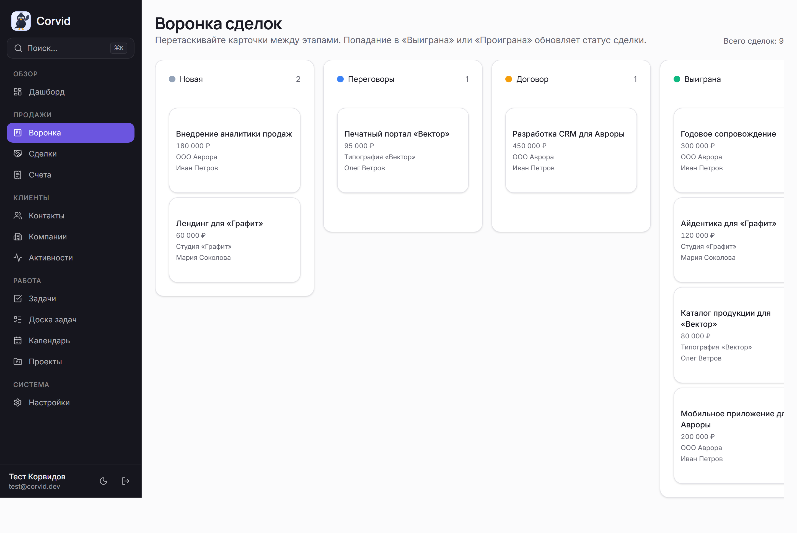
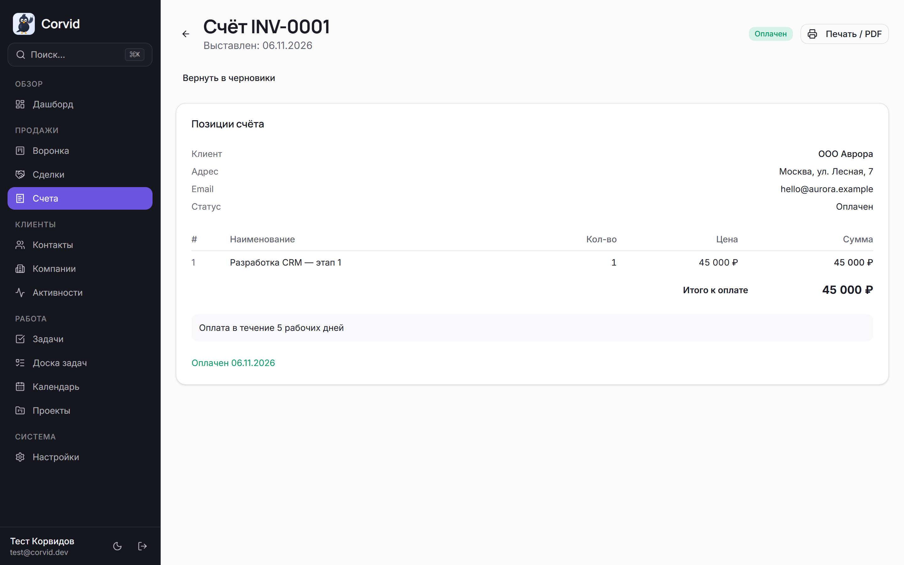
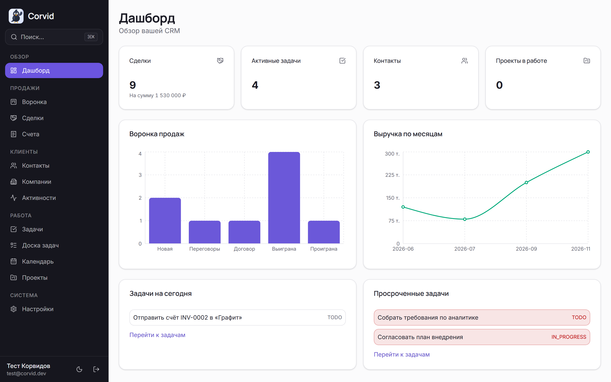

◆ CRM ДЛЯ ФРИЛАНСА · NEXT.JS 16 · TRPC · PRISMA · SQLITE
Своя воронка. Свои поля. Свои счета.
Corvid ставится на ваш сервер и ведёт дела фрилансера: сделки с кастомными полями под ваш бизнес — недвижимость, автосервис, студия или что угодно ещё, — счета с печатной формой, задачи и аналитика. 200 автотестов и 22 e2e проверяют каждую цифру на каждый push.

01
Восемь модулей — весь цикл работы
От первого контакта до итога месяца. Ничего лишнего между ними.
воронка от заявки до оплаты; этапы задаёте сами, суммы считаются в копейках без флоат-мусора
TEXT, NUMBER, DATE, SELECT на сделках, компаниях и контактах; заводятся в Настройках, проверяются на сервере, удаляются вместе с записью
позиции, три валюты, автонумерация INV-0001, печатная форма A4 из карточки
компании и контакты, история активностей по каждой карточке
список и доска; просроченные сами поднимаются в сводку дня
выручка по месяцам и валютам раздельно, сделки и задачи на одном экране
ADMIN, MANAGER, VIEWER; права проверяет API — наблюдатель не удалит ничего даже прямым запросом
SQLite на вашем диске, миграции Prisma, ротация бэкапов с проверкой целостности
02
Экраны продукта
Скриншоты сняты с работающего приложения (демо-набор db:seed-demo), без мокапов и фотошопа.


03
Маршрут сделки
01 Заявка — контакт и потребность ложатся в воронку; 02 Сделка — этап, сумма в валюте клиента, дедлайн; 03 Работа — задачи и счёт ведутся по сделке, каждая активность остаётся в истории; 04 Аналитика — итог месяца собирается сам, без ручных таблиц.
Учебные данные для демо заводятся одной командой — npm run db:seed-demo, пустая установка остаётся пустой.
04
Проверено, а не обещано
Каждое число ниже проверяет CI на каждый push в main.
конвейер на каждый push: lint → tsc → vitest → build → Playwright e2e → CodeQL
05
Запуск за четыре команды
Node 20.9+, npm. SQLite создаётся миграциями, ничего ставить не нужно.
git clone https://github.com/ssrjkk/corvid_crm.git
cd corvid_crm && npm install
# учебные данные: воронка, счёт INV-0001, демо-юзеры
npm run db:seed-demo
# приложение на http://localhost:3000
npm run dev
# вход демо-админа (создаёт db:seed-demo)
test@corvid.dev / Test12345!